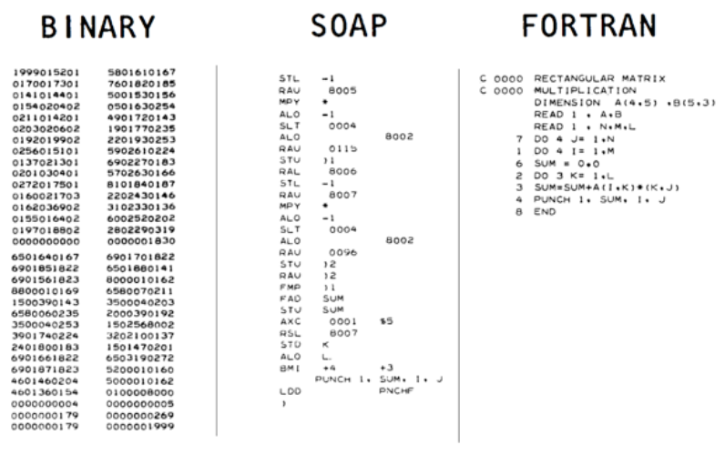

1 What is a Compiler?
A function that maps an input string to an output string.
compiler : String -> String |
Typically, the input and output strings are “programs”
compiler : SourceProgram -> TargetProgram |
For example, here are some well known compilers:
gcc, clang : C -> Binary (* a.out, .exe *) |
ghc : Haskell -> Binary |
javac : Java -> JvmByteCode (* .class *) |
scalac : Scala -> JvmByteCode |
ocamlc : Ocaml -> OcamlByteCode (* .cmo *) |
ocamlopt : Ocaml -> Binary |
gwt : Java -> JavaScript (* .js *) |
v8 : JavaScript -> Binary |
nasm : x86 -> Binary |
pdftex : LaTeX -> PDF |
pandoc : Markdown -> PDF | Html | Doc |
Key Requirements on output program:
Has the same meaning (“semantics”) as input,
Is executable in relevant context (VM, microprocessor, web browser).
1.1 A Bit of History
Compilers were invented to avoid writing machine code by hand.
 From Binary to FORTRAN
Richard Hamming – The Art of Doing Science and Engineering, p25:
In the beginning we programmed in absolute binary… Finally, a Symbolic Assembly Program was devised – after more years than you are apt to believe during which most programmers continued their heroic absolute binary programming. At the time [the assembler] first appeared I would guess about 1% of the older programmers were interested in it – using [assembly] was “sissy stuff”, and a real programmer would not stoop to wasting machine capacity to do the assembly.
John A.N. Lee, Dept of Computer Science, Virginia Polytechnical Institute
One of von Neumann’s students at Princeton recalled that graduate students were being used to hand assemble programs into binary for their early machine. This student took time out to build an assembler, but when von Neumann found out about it he was very angry, saying that it was a waste of a valuable scientific computing instrument to use it to do clerical work.
1.2 What does a Compiler look like?
 Compiler Pipeline
Compiler Pipeline
An input source program is converted to an executable binary in many stages:
Parsed into a data structure called an Abstract Syntax Tree
Checked to make sure code is well-formed (and well-typed)
Simplified into some convenient Intermediate Representation
Optimized into (equivalent) but faster program
Generated into assembly x86
Linked against a run-time (usually written in C)
1.3 What is CMSC 430?
- A bridge between two worlds
High-level programming languages: OCaml (CMSC 330)
Machine code: x86/ARM (CMSC 216)
A sequel to both those classes.
- How to write a compiler for MiniRacket -> x86
Parsing
Checking & Validation
Simplification & Normalizing
Optimization
Code Generation
- But also, how to write complex programs
Design
Implement
Test
Iterate
1.4 How to write a Compiler?
General recipe, applies to any large system
gradually, one feature at a time!
We will
Step 1 Start with a teeny tiny language,
Step 2 Build a full compiler for it,
Step 3 Add a few features,
Go to Step 2.
(Yes, loops forever, but we will hit Ctrl-C in 15 weeks...)
1.5 Mechanics
See Syllabus.
1.6 What will we do?
Write a compiler for MiniRacket -> x86
But Rome wasn’t built in a day … and neither is any serious software.
 Rome wasn’t built in a day
Rome wasn’t built in a day
So we will write many compilers:
Numbers and increment/decrement
Local Variables
Nested Binary Operations
Booleans, Branches and Dynamic Types
Functions
Tuples and Structures
Lambdas and closures
Types and Inference
Garbage Collection
1.7 What will you learn?
Core principles of compiler construction
Managing Stacks & Heap
Type Checking
Intermediate forms
Optimization
Several new languages
Racket to write the compiler
C to write the “run-time”
x86 compilation target
More importantly how to write a large program
How to use types for design
How to add new features / refactor
How to test & validate
1.8 What do you need to know?
This 430 depends very heavily on CMSC 330.
Familiarity with Functional Programming and Ocaml
Datatypes (e.g. Lists, Trees, ADTs)
Polymorphism
Recursion
Higher-order functions (e.g. map, filter, fold)
Also depends on CMSC 216
Experience with some C programming
Experience with some assembly (x86)
1.9 A few words on the medium of instruction
We will use Racket which, for our purposes is like Ocaml but with nicer syntax.1To start a good flamewar just post this anywhere online where Haskell and OCaml folks can see it.
Racket has many advanced features beyond what you saw in 330, but we won’t be using them; in the few cases we do, I’ll explain them as we go.